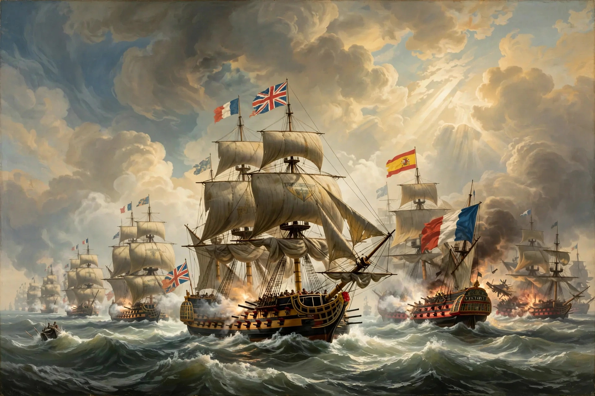

The Battle of Trafalgar was a naval engagement fought on 21 October 1805 by the British Royal Navy against the combined fleets of France and Spain during the Napoleonic Wars. Britain's Admiral Lord Nelson defeated the allied fleet off Cape Trafalgar, on Spain's south-western coast, establishing British naval supremacy for more than a century — at the cost of Nelson's own life, shot by a French marksman at the height of the battle.
| Battle of Trafalgar | |
|---|---|
| Date | 21 October 1805 |
| Location | Cape Trafalgar, off Cádiz, Spain |
| Result | Decisive British victory |
| Belligerents | United Kingdom v. French Empire and Spain |
| Commanders | Horatio Nelson, 1st Viscount Nelson †; Cuthbert Collingwood v. Pierre-Charles Villeneuve (captured); Federico Gravina |
| Strength | 27 British ships of the line v. 33 allied ships of the line |
| Losses | British: no ships lost, ~1,700 killed and wounded. Allied: ~20 ships lost, several thousand killed, wounded and captured |
Napoleon's plan to invade England required command of the Channel. The combined Franco-Spanish fleet under Villeneuve, after a chase to the West Indies and back, was blockaded in Cádiz. Ordered to sail for the Mediterranean in October 1805, Villeneuve put to sea knowing Nelson's fleet waited offshore.
Nelson attacked in two columns, perpendicular to the allied line — the famous signal "England expects that every man will do his duty" flying from HMS Victory. Breaking the line in two places let the British concentrate on the allied centre and rear in a close-range mêlée in which superior British gunnery and seamanship told. Victory duelled the Redoutable, from whose tops a marksman shot Nelson; he died below deck around 4:30 p.m., knowing the battle was won. A storm after the battle wrecked many of the prizes.

[ IMAGE: J.M.W. Turner's "The Fighting Temeraire"-era seascape style — HMS Victory breaking the line at Trafalgar, guns firing broadsides amid smoke, ensigns flying. ] The British columns break the Franco-Spanish lineTrafalgar ended any realistic French or Spanish challenge at sea for a generation. Napoleon abandoned invasion and turned to the Continental System against British trade, while Britain used sea power to sustain the Peninsular War and its global commerce. Nelson became Britain's pre-eminent naval hero; his column in Trafalgar Square, London, is the battle's monument.
Horatio Nelson, 1st Viscount Nelson · Napoleonic Wars · Battle of Waterloo
Categories: Naval battles of the Napoleonic Wars · 1805 in military history · Horatio Nelson